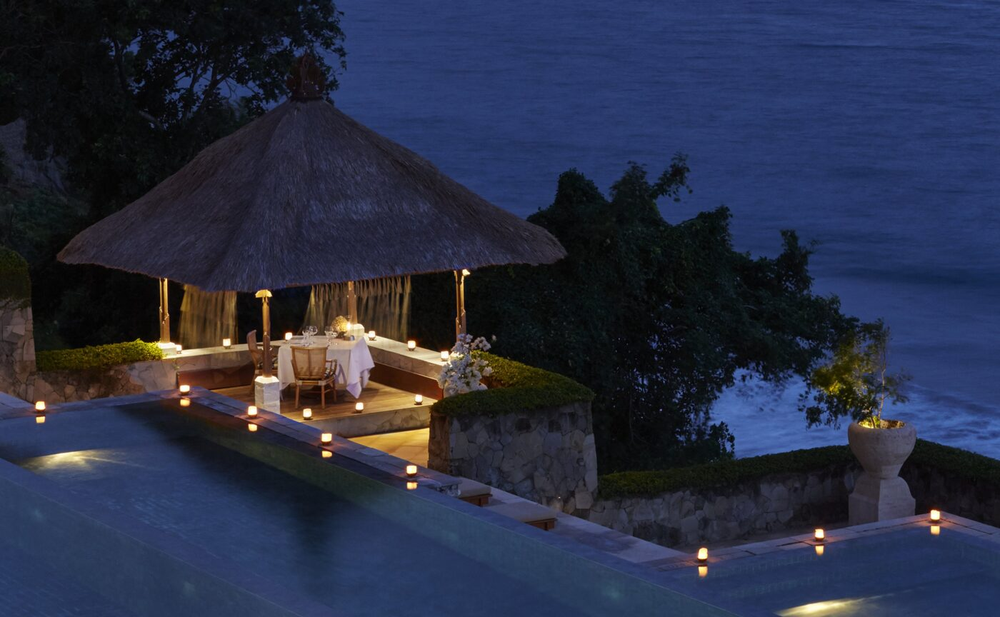

Thirty minutes up the road from Amankila, the last king of Karangasem built himself a palace on water. Aman now lays a table there after the gates close, with the family's blessing.
Ujung is a village at the eastern end of Bali, where the road from Amlapura runs out at the sea. In 1909 the raja of Karangasem, I Gusti Bagus Jelantik, who ruled under the title Anak Agung Anglurah Ketut Karangasem from 1908 until 1950, began turning a pond there into a pleasure garden. A Dutch architect, van den Hentz, and a Chinese one, Loto Ang, worked alongside Balinese builders; the result, finished in 1921, has European arches, Chinese ornament and Balinese carving, a long bridge across the water and a pavilion standing in the middle of the pool. Allied bombing wrecked it in the war, and the eruption of Mount Agung in 1963 finished the job. What stands today was rebuilt.
Amankila's dining calendar, updated at the start of September, now lists a Karangasem Royal Dinner in the palace's private grounds, arranged with the Karangasem royal family. The evening begins with a walk through the estate. Dinner follows in the pavilion, a menu drawn from the cooking of the regency, with a musician playing the penting, the stringed instrument particular to this corner of Bali. The palace is a public monument by day. At night it belongs to the table.
Tuttle's arches
The link between the two places is older than the dinner. Ed Tuttle drew Amankila in the early 1990s with Ujung in his head; the doorways and alcoves of the resort borrow the rounded arches of the palace hall, and Aman says so. The resort opened in March 1992 on Indrakila hill above the Lombok Strait, thirty-four thatched pavilions on stilts stepping down through the frangipani, joined by walkways through the tree canopy. At its centre is the three-tier pool, three long rectangles of blue tile spilling one into the next down the cliff. A staircase in the Tuttle manner drops to it from the restaurant.
Below all of that is the Beach Club and a black-sand beach with the resort's two outriggers pulled up on it. Manta Point and Crystal Bay off Nusa Penida are a boat ride away. Mount Agung, the island's holiest mountain, closes the view to the north on clear mornings.

Bhoga Samātra, the new Balinese dinner beside the three-tier pool · Courtesy of Aman
Bhoga Samātra
The second addition to the calendar is closer to home. Bhoga Samātra is a Balinese dinner served beside the pool, built on the idea that on this island the act of serving food is itself an offering, and that a host's abundance is a form of thanks. The menu is local, the recipes traditional, the setting the pool at dusk with the strait going dark behind it. On full-moon nights, Purnama on the Hill adds meditation, a blessing, dance and a gamelan orchestra, and on certain dates a Pasar Senggol night market of Balinese food and crafts set up inside the resort.
The older tables remain. The Rijsttafel runs to ten dishes, vegetarian, seafood and meat, with rice and a trio of sorbets, served at Sandikala or in the pavilion. The Megibung dinner is the East Balinese custom of eating from one shared platter, centred on nasi tumpeng, the cone of rice that stands for Agung. A Beach Dinner sets two candlelit tables apart on the sand, each with its own chef at an open grill, and ends at a private balé beside a bonfire. Sunset is taken with cocktails and canapés on the Batu Jati rock platform above the beach. Afternoon tea at The Bar is Balinese coffee and cakes made by mothers from a village nearby.
The raja built the palace to receive guests. A century on, it is receiving them again.
The Splendid EditThe regency
Karangasem is the Bali that the south forgot to build over. Tirta Gangga, the same king's second water garden, is also half an hour away. Tenganan, one of the Bali Aga villages that predate the Hindu-Javanese court, still weaves geringsing, the double ikat cloth that almost nowhere else on earth produces; the resort takes guests in to watch the loom. Samsara Living Museum in Jungutan teaches gamelan and arak distilling. Back at the resort, Pak Mangku, the local priest, performs blessings at Padmasana, the resort's temple, and Pak Arta of the guest team teaches lontar, the palm-leaf manuscript writing he learned from his grandfather.
The pavilions are 94 square metres, Ocean or Garden, all on stilts with wide terraces. The Garden Pool Pavilions run to 204 square metres with a pool of their own; the three Ocean Pool Pavilions, each laid out slightly differently, have a nine-metre infinity pool facing Amuk Bay. Higher up, the Indrakila Pool Villa is 250 square metres with sea and temple views, the Kilasari Pool Villa 302 with an 11.7-metre pool, and the Amankila Two-Bedroom Villa 660 square metres over the beach with a butler and an aquamarine-tiled pool. Every stay includes the airport transfers both ways, breakfast, the afternoon tea, yoga on alternate mornings, a shuttle around Manggis and Candidasa, and the boards and kayaks at the Beach Club.
Nyepi, the day of silence, falls on 9 March 2027, and Galungan runs from 13 to 23 January. Neither is needed as an excuse. The palace dinner is on the calendar now, and the road from the airport is ninety minutes.
Dining, accommodation, inclusions and experiences from aman.com (Amankila dining page updated 1 September 2026; accommodation, experiences and cultural pages, 2025–2026). Ujung Water Palace history from Bali.com, NOW! Bali and published visitor guides.
Photography courtesy of Aman — © Aman, Amankila